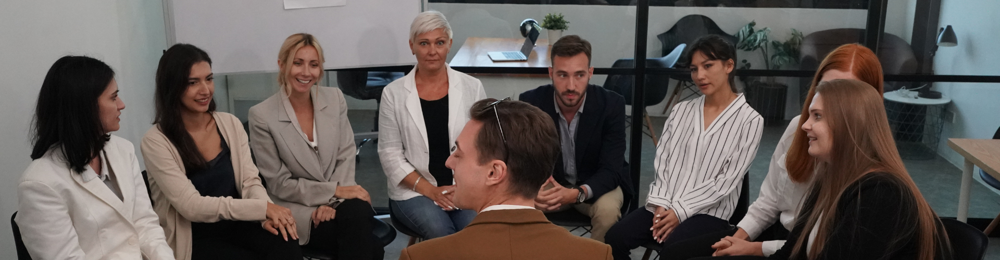

Primary research is information you collect yourself for a particular purpose, such as surveys,
interviews, focus groups or test screenings. It gives up-to-date, project-specific data about
your audience.
What is Primary Research?
Primary research is data collected first-hand by the producer or organisation
for a particular project. It is gathered directly from the target audience using methods such
as questionnaires, interviews, focus groups, observation or user testing.
Because it is collected specifically for your project, primary research can be highly relevant
and detailed. However, it can also be time-consuming and more expensive than using existing data.
Key points you must remember
- Primary research is collected directly from the audience (first-hand data).
- Common methods include surveys, interviews, focus groups, observation and test screenings.
- It can provide both quantitative data (numbers) and qualitative data (opinions and reasons).
- It is usually more up to date and specific than secondary research.
- Sample size, question design and bias all affect how reliable the results are.
Primary Research at a Glance
Use this infographic to remember what primary research is, when to use it and how to evaluate it.
- Surveys and questionnaires: designed by you for your specific project.
- Interviews and focus groups: speaking directly to members of your target audience.
- User testing: watching people interact with prototypes or early versions.
- Observation: recording behaviour in real situations (e.g. how people use a website).
- Test screenings: previewing videos or adverts to collect feedback before release.
- Exam link: emphasise that the data is new, project-specific and collected by the producer.
First-hand · Project-specific
- Advantages: up-to-date, relevant to your exact project, can target a specific audience.
- Disadvantages: can be time-consuming, costly and require planning and skills.
- Good for: testing ideas, checking usability, understanding detailed opinions.
- Less good for: getting a quick overview of a large market or long-term trends.
- Exam tip: when evaluating, balance strengths and weaknesses and refer to budget/time.
- Comparison: contrast with secondary research to show deeper understanding.
Pros · Cons · Best Use
Games to Practise Primary Research
Use these games to practise choosing suitable primary research methods, designing good questions
and explaining the strengths and weaknesses of different approaches.
Mega game · Research methods
Research Methods Adventure
Work through staged challenges on primary and secondary research, quantitative vs qualitative
data and reliability before a project begins.
Mega game
Primary & secondary
Reliability
Mixed exam
Explain It! 2-Mark Engine
Practise perfect 2-mark answers for advantages, disadvantages and differences
with instant feedback on structure and detail.
2 markers
PEE structure
Targeted practice
All topics
iMedia Genius
The flagship exam-style quiz covering every R093 question type: MCQs, short answers,
binary questions, bonus rounds and timed scoring.
Exam-style
All R093 content
Mixed difficulty
Exam Practice – Primary Research
Q1. State one method of primary research. (1 mark)
Technique: Give one clear method such as a questionnaire, interview,
focus group or observation.
Q2. Explain one advantage of using a questionnaire to collect information from a target audience. (2 marks)
Technique: Make one point about speed, cost, or being able to reach many people,
then explain how this helps the project.
Example structure: “A questionnaire is useful because… This means that…”
Q3. Describe one disadvantage of using focus groups for primary research. (3 marks)
Technique: Describe a specific disadvantage (e.g. small sample, dominant voices,
time-consuming) and then develop your answer by explaining how this might affect the results.
Q4. Explain two reasons why carefully designed questions are important in primary research. (4 marks)
Technique: Give two separate reasons (e.g. avoiding bias, collecting useful data,
making questions clear). For each, explain the impact on the quality of the results.
Q5. A college media department is planning a new online magazine for students. Discuss which
primary research methods they could use to find out what content and features students want,
and explain how the results would help them design the magazine. (9 marks)
Technique: Refer to several methods (e.g. online surveys, focus groups,
interviews, prototype testing). Explain what each method would reveal and how this would
influence decisions about layout, content, style and platforms. Finish with a justified conclusion.
- Paragraph 1: Outline suitable primary research methods and who will take part.
- Paragraph 2: Explain how findings influence design choices (sections, tone, visuals).
- Paragraph 3: Explain how primary research reduces risk and improves engagement.
- Final paragraph: Conclusion – which methods are most useful and why.
Can You Now…?
- Define primary research and give examples of methods.
- Explain advantages and disadvantages of different primary research methods.
- Choose appropriate primary research methods for different media projects and justify your choices.